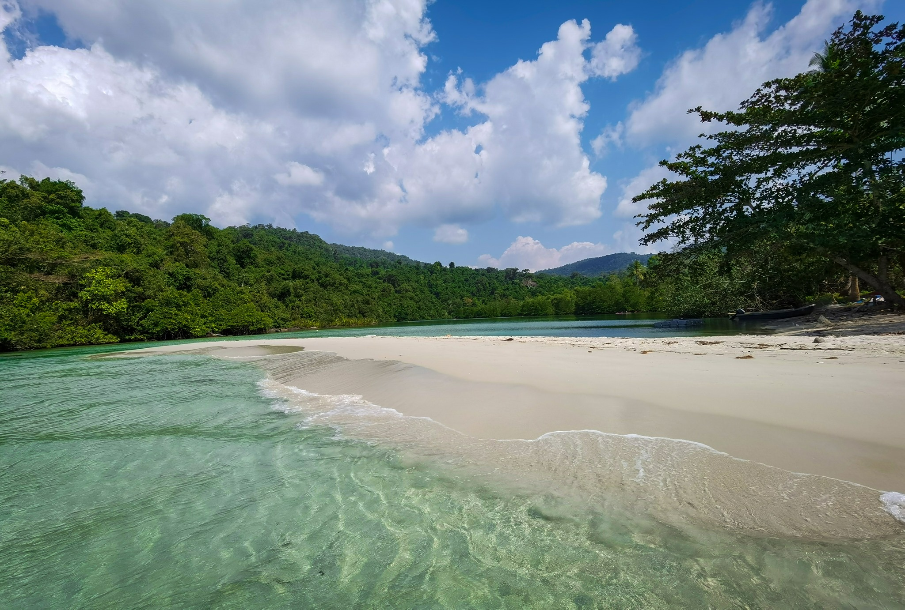
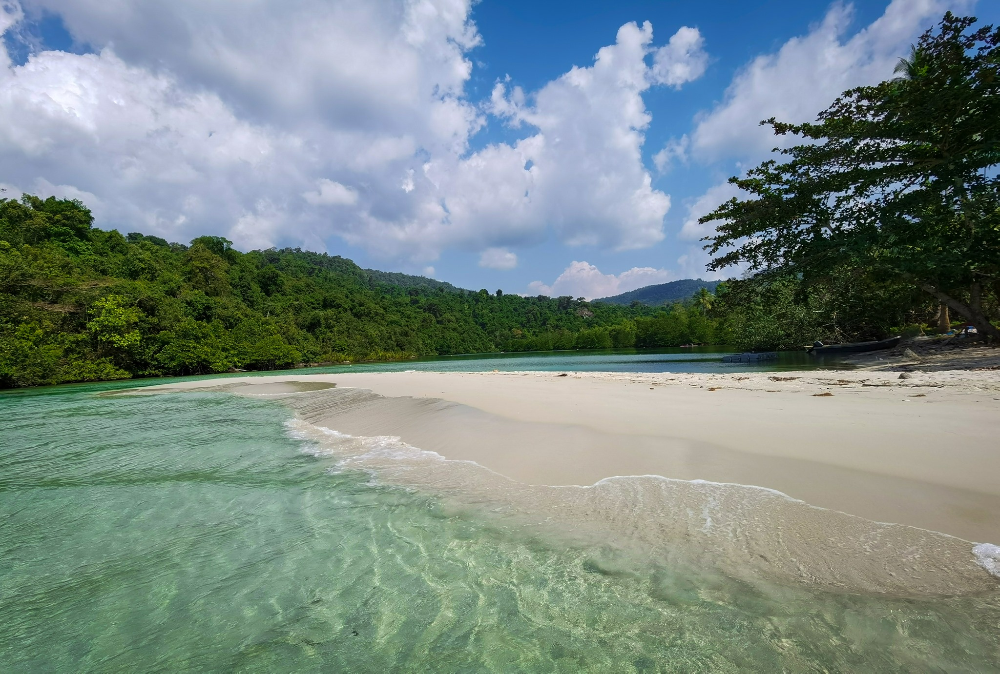

កោះកុងក្រៅជាកោះដែលមានសក្តានុពលផ្នែកធនធានធម្មជាតិ ជីវៈចម្រុះ
និងមានឆ្នេរខ្សាច់ល្អស្រស់ស្អាត ស្ថិតនៅលើផ្ទៃទឹកសមុទ្រដ៏ធំល្វឹងល្វើយ
ដែលមានពណ៌ខៀវស្រងាត់នៃខេត្តកោះកុង។
តើពិតដែរឬទេ? តោះ! មកដឹងពីខេត្តកោះកុងទាំងអស់គ្នា។
កោះកុង គឺជាខេត្តមួយនៃប្រទេសកម្ពុជា។ ទីរួមខេត្តរបស់ខេត្តកោះកុងគឺក្រុងខេមរភូមិន្ទ។ ខេត្តដែលមានក្រុងខេមរភូមិន្ទជាទីរួមខេត្តនេះ ស្ថិតនៅភាគនិរតីនៃប្រទេសកម្ពុជា។ ខេត្តកោះកុងមានព្រំប្រទល់ ខាងជើងជាប់នឹងខេត្តពោធិ៍សាត់ ខាងកើតជាប់នឹងខេត្តកំពង់ស្ពឺ កំពត និង ព្រះសីហនុ ខាងត្បូងនិងខាងលិចជាប់នឹងឈូងសមុទ្រថៃ និងមួយផែ្នកនៃ ចង្វាតត្រាច(ខេត្តត្រាច)ប្រទេសថៃ។
កោះកុងក្រៅ គឺជាកោះសម្បូរទៅដោយសក្តានុពលផ្នែកធនធានធម្មជាតិ អំណោយផលដល់ការស្រាវជា្រវប្រព័ន្ធបរិស្ថានជីវៈចម្រុះ និងមានឆ្នេរខ្សាច់ល្អសក្បុស ស្ថិតនៅលើផ្ទៃទឹកសមុទ្រដ៏ធំល្វឹងល្វើយ ដែលមាពណ៌ខៀវស្រងាត់គួរជាទីគយគន់ ជាពិសេសមាន ទឹកជ្រោះចំនួន ១០កន្លែង ដែលកន្លែងនីមួយៗមានច្រើនដំណាក់ អាចមានរហូតដល់ ៣០ជាន់ និង សត្វព្រៃ មច្ឆា ផ្កាថ្ម និងជីវៈចម្រុះស្អាតៗប្លែកចក្ខុនៅឯបាតសមុទ្រ ។

កោះកុងក្រៅ បណ្ដែតខ្លួនលើផ្ទៃទឹកសមុទ្រលាតសន្ធឹងល្វឹងល្វើយ ហើយអ្វីដែលទេសចរជញ្ជក់មាត់មិនដាច់ គឺសម្រស់ស្អាតគ្មានពីរនៃទឹកសមុទ្រថ្លាឆ្លុះជាប់នឹងមេឃ អមដោយទេសភាពទាក់ចិត្ត មិនអាចរំលងការថតរូបផ្ដិតយកអនុស្សាវរីយ៍បានឡើយ ។ ម្យ៉ាងទៀត នៅលើកោះមានដើមដូងត្រឈឹងត្រឈៃ កាន់តែបន្ថែមឲ្យកោះដែលផុសនៅកណ្ដាលផ្ទៃមហាសាគរមួយនេះ ស្រស់ស្អាតរកអ្វីផ្ទឹមបាន។ ឆ្នេរកោះកុងក្រៅ មានចំនួន៦ឆ្នេរ ដែលឆ្នេរនីមួយៗមានខ្សាច់សស្អាត ទឹកសមុទ្រថ្លា អាចមើលឃើញដល់បាតសមុទ្រ ព្រមទាំងមានព្រែកខាងក្រោយឆ្នេរ ដែលអាចអោយយើងគយគន់ទេសភាពយ៉ាងស្អាតបំផុត។ ដោយឡែកសម្រាប់ឆ្នេរ ដែលភ្ញៀវទេសចរណ៍និយមទៅលេង និងមានទឹកប្រើប្រាស់គ្រប់គ្រាន់គឺឆ្នេរទី៣ និងទី៤ ព្រោះនៅទីនោះទេសចរអាចអង្គុយស្ទូចត្រី ងូតទឹក ជិះទូកលេង ទស្សនាទឹកធ្លាក់ និងគយគយមើលលទិដ្ឋភាពថ្ងៃរៀបលិច លាយឡំជំនោរសមុទ្របោកបក់ លាន់លឺសំឡេងសមុទ្រ ស្នូររណ្ដំ ហាក់ធ្វើឲ្យអារម្មណ៍ម៉ងសៅតាំងប៉ុន្មានរលាយអស់គ្មានសល់ ។ ក្រៅពីនេះ ទេសចរក៏អាចមុជទឹកមើលផ្កាថ្ម និងជិះម៉ូតូទឹកបានយ៉ាងសប្បាយផងដែរ ។
កោះកុងក្រៅ គឺជាកោះដ៍ធំបង្អស់របស់ប្រទេសកម្ពុជា ស្ថិតក្នុងឃុំជ្រោយប្រស់ ស្រុកកោះកុង ខេត្តកោះកុង ដែលមានចម្ងាយប្រមាណ ៣០ គ.ម ពីក្រុងខេមរភូមិន្ទ។ តំបន់នេះ មានសក្តានុពលផ្នែកធនធានធម្មជាតិ ជីវៈចម្រុះ មានផ្ទៃដីប្រមាណ ៨០ គ.ម២ និងកម្ពស់ប្រហែល ៤១០ម ស្ថិតនៅលើផ្ទៃទឹកសមុទ្រដ៏ធំរបស់កម្ពុជា សព្វថ្ងៃតំបន់កោះកុងក្រៅនេះស្ថិតនៅក្រោមការគ្រប់គ្រងរបស់អង្គភាពយោធាជើងទឹកផ្នែកលំហសមុទ្រ។ ដើម្បីទៅកាន់ទីនោះ ភ្ញៀវទេសចរជាតិ អន្តរជាតិទាំងអស់អាចធ្វើដំណើរទៅកាន់តំបន់នេះបានតាមរយៈផ្លូវទឹក ដោយត្រូវធ្វើដំណើរ ដោយយានយន្ត ឬម៉ូតូទៅកាន់ខេត្តកោះកុង (បើមកពីភ្នំពេញ ហួសផ្លូវបត់តារាសាគរប្រមាណ២០គីឡូម៉ែត្រ នៅខាងឆ្វេង នឹងឃើញផ្លូវដីក្រហមមួយ។ បត់តាមផ្លូវក្រហម ជិះប្រកាន់ផ្លូវបត់ឆ្វេង ប្រមាណជា១០គីឡូ នឹងទៅដល់ភូមិនេសាទមួយ ដែលអាចឡើងទូកនៅទីនោះ និងបន្ទាប់មក គឺធ្វើដំណើរដោយទូកប្រមាណ ១ម៉ោងកន្លះទៅ២ម៉ោងពីផែទូក នោះលោកអ្នកនឹងទៅដល់ទីឋានដ៏ត្រកាលមួយនេះហើយ៕
 
